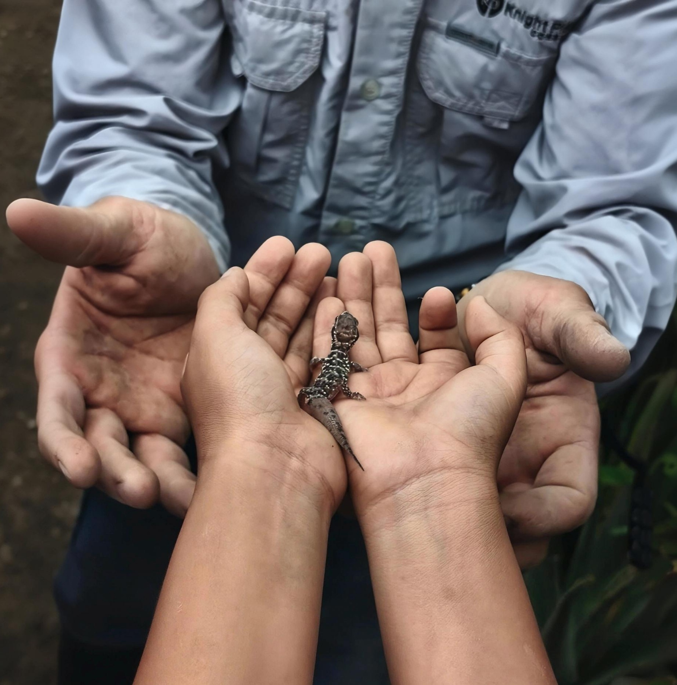

🌱 Observar
Reconocer semillas, plantas, hojas, raíces y los cambios que ocurren durante el crecimiento.

Proyecto 03 · Educación, cultivo y alimentación
Un espacio donde aprender sobre la naturaleza deja de ser solamente una explicación y se convierte en una experiencia: sembrar, cuidar, observar y comprender.
El proyecto
El Biohuerto Escolar I.E.I. Luis Enrique X forma parte de los proyectos de Legado Botánico en San Martín de Porres. Su propósito es acercar a los niños al suelo, las plantas y los ciclos naturales mediante el contacto directo con un espacio de cultivo.
En un biohuerto, conceptos que pueden parecer abstractos —semilla, raíz, agua, suelo, materia orgánica, crecimiento y alimento— pueden observarse y experimentarse de manera concreta. La tierra se convierte así en una herramienta pedagógica.
Una experiencia educativa
La educación ambiental adquiere otra dimensión cuando los niños pueden tocar la tierra, observar una semilla germinar y seguir los cambios de una planta. El aprendizaje se construye a través de la experiencia, la curiosidad y el cuidado.
Reconocer semillas, plantas, hojas, raíces y los cambios que ocurren durante el crecimiento.
Relacionar agua, suelo, luz y cuidado con las necesidades de los seres vivos.
Aprender mediante tareas sencillas y apropiadas para la experiencia de los niños.
Reconocer que los alimentos tienen un origen y que producirlos requiere recursos, tiempo y responsabilidad.
No hace falta viajar lejos para comenzar a comprender un ecosistema. Una semilla, un puñado de tierra y una planta pueden ser el primer contacto de un niño con los grandes ciclos de la naturaleza.
El ciclo del cultivo
Acondicionar el espacio y conocer el suelo.
Colocar las semillas y acompañar su germinación.
Observar, regar y mantener las plantas.
Reconocer el resultado y comprender el ciclo.
Circularidad
El biohuerto puede integrarse con una visión de aprovechamiento de la materia orgánica: restos vegetales y otros materiales adecuados pueden transformarse en recursos para el suelo mediante compostaje o vermicompostaje, siempre según las condiciones y manejo del proyecto.
De esta manera, los niños pueden comprender que en la naturaleza los ciclos no funcionan como una línea de “usar y desechar”, sino como procesos en los que la materia vuelve a incorporarse al sistema.
Participación
El proyecto está pensado como un espacio de colaboración entre la comunidad educativa y quienes participan en las actividades de Legado Botánico. Las jornadas pueden convertirse en momentos para aprender, trabajar juntos y cuidar un espacio común.
Escríbenos para conocer las próximas actividades y las formas de participación en el proyecto.
Galería
Esta sección queda preparada para incorporar fotografías reales de las actividades, cultivos, estudiantes, voluntarios y evolución del biohuerto.
Una semilla para el futuro
El biohuerto representa una forma sencilla y concreta de acercar la educación ambiental a la vida cotidiana. A medida que el proyecto avance, esta página incorporará especies cultivadas, actividades, fotografías, resultados y nuevos datos documentados por Legado Botánico.
La concepción educativa del proyecto se relaciona con el trabajo documentado por la Revista Kawsaypacha sobre iniciativas de jardín botánico y educación ambiental en San Martín de Porres. La información específica del biohuerto se actualizará con los datos proporcionados por la asociación y sus responsables.
← Volver a Proyectos